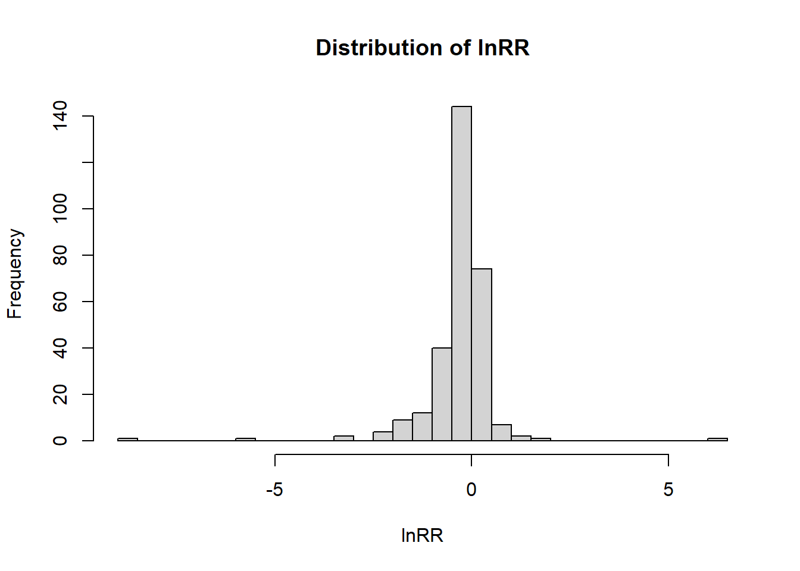
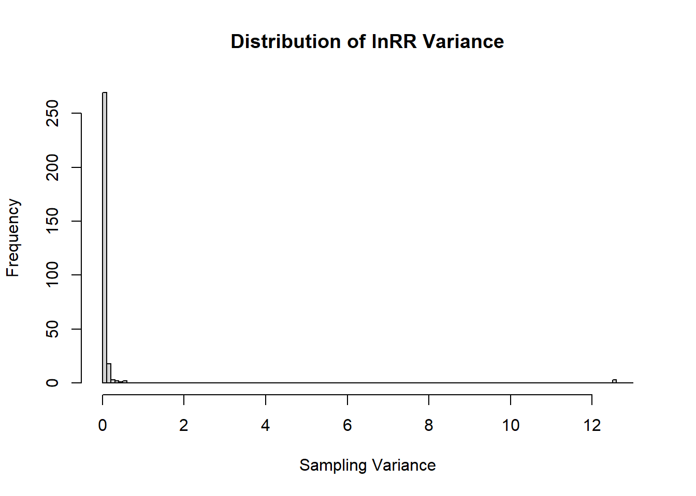

pacman::p_load(
DT,
dtplyr,
here,
knitr,
tidyverse,
patchwork,
metafor,
orchaRd
)Estimating effect sizes
This section documents the full workflow used to compute log response ratios (lnRR) and their sampling variances from the extracted dataset.
Note
The log response ratio (lnRR) is defined as:
\[ \begin{equation} \label{eq:lnRR} \ln RR = \ln\left(\frac{M_T}{M_C}\right) + \frac{1}{2} \left( \frac{SD_T^2}{N_T M_T^2} - \frac{SD_C^2}{N_C M_C^2} \right), \end{equation} \]
where \(M_T\) and \(M_C\) denote the sample means, \(SD_T\) and \(SD_C\) the sample standard deviations, and \(N_T\) and \(N_C\) the sample sizes of the music-exposed (treatment) and control groups, respectively.
Negative values indicate reductions in anxiety- or depression-like behavior under music exposure (after directional harmonization).
The following packages are required for data manipulation, effect size computation, and visualization. The metafor package is used for standardized effect size calculations, and orchaRd is used for meta-analytic visualization.
lnRR Effect Size Calculation Function
This function, calculate_lnRR(), is designed to calculate the Log Response Ratio (\(lnRR}\)) and its variance (\(lnRR_var}\)) for both continuous and percentage data, accounting for dependent (correlated) and independent comparison structures.
The function below implements all steps required to compute lnRR and its sampling variance. It includes:
- Boundary corrections for extreme values (0 or 100%)
- Standard deviation imputation from standard errors
- Direction harmonization so that negative lnRR values always indicate beneficial effects
- Separate handling of continuous and proportional outcomes
- Variance adjustment for dependent comparisons (assuming r = 0.5)
NoteVariable definitions
| Variable | Description |
|---|---|
ES_ID |
Unique identifier for each effect size |
Study_ID |
Identifier for the original study |
C_n, Ex_n |
Sample sizes for control and experimental groups |
C_mean, Ex_mean |
Group means for control and experimental groups |
C_SE, Ex_SE |
Standard errors |
C_SD, Ex_SD |
Standard deviations |
Data_type |
Outcome type (time, distance, count, latency, percentage, index) |
Comparison_structure |
Independent (separate animals) or Dependent (same animals) |
Higher_better |
Indicates whether higher values reflect lower anxiety/depression |
calculate_lnRR <- function(dt) {
## 1. Data Cleaning and Imputation (Handling Extreme Values)
# This section adjusts extreme boundary values (0, 100) and 0 standard deviations (SDs)
# to prevent mathematical errors (division by zero, log(0), or Inf values)
# during the lnRR and variance calculations.
dt <- dt %>%
mutate(
# Adjust means that are exactly 0 to a small, non-zero value (0.005)
C_mean = ifelse(C_mean == 0, 0.005, C_mean),
Ex_mean = ifelse(Ex_mean == 0, 0.005, Ex_mean),
# Adjust means that are exactly 100 to a value just below 100 (99.5)
# (This is critical for percentages reported 0-100)
C_mean = ifelse(C_mean == 100, 99.5, C_mean),
Ex_mean = ifelse(Ex_mean == 100, 99.5, Ex_mean),
# Adjust SDs that are 0 to a small, non-zero value (0.01/0.05) to allow
# variance calculation (which relies on SDs).
Ex_SD = ifelse(Ex_SD == 0, 0.01, Ex_SD),
C_SD = ifelse(C_SD == 0, 0.05, C_SD),
# Standardize the 'Data_type' variable to lowercase to ensure reliable matching
# in the subsequent 'if/else if' blocks, regardless of how it was typed in the source data.
Data_type = tolower(Data_type)
)
## 2. Setup
dt1 <- dt %>%
mutate(
# Initialize the final effect size columns with numeric NA values.
lnRR = NA_real_,
lnRR_var = NA_real_
)
# Define the arcsine square root transformation function: asin(sqrt(p)).
# This transformation is necessary for proportional data (percentages) to stabilize their variance.
asin_trans <- function(proportion) {
trans <- asin(sqrt(proportion))
return(trans)
}
## 3. Calculation Loop (Iterating through each row/effect size)
for (i in seq_len(nrow(dt1))) {
# Extract row-specific variables for the current row 'i'
Ex_n <- dt1$Ex_n[i]
C_n <- dt1$C_n[i]
Ex_mean <- dt1$Ex_mean[i]
C_mean <- dt1$C_mean[i]
Ex_SD <- dt1$Ex_SD[i]
C_SD <- dt1$C_SD[i]
Data_type <- dt1$Data_type[i]
Comparison_structure <- dt1$Comparison_structure[i]
Higher_better <- dt1$Higher_better[i]
current_es_id <- dt1$ES_ID[i] # Used for conditional scaling check below.
# --- A. Continuous Data (Time, Distance, Count, Latency, Index, etc.) ---
if (Data_type %in% c("time", "distance", "count", "latency", "index")) {
# Calculate the Log Response Ratio (lnRR) using the metafor::escalc function.
if (Comparison_structure == "Independent") {
# 'ROM' (Ratio of Means) for independent groups.
effect <- metafor::escalc(measure = "ROM", n1i = Ex_n, n2i = C_n,
m1i = Ex_mean, m2i = C_mean, sd1i = Ex_SD, sd2i = C_SD,
var.names = c("lnRR", "lnRR_var"))
} else if (Comparison_structure == "Dependent") {
# 'ROMC' (Ratio of Means, Correlated) for dependent/repeated groups,
# using an assumed correlation (ri = 0.5).
effect <- metafor::escalc(measure = "ROMC", ni = (Ex_n + C_n) / 2,
m1i = Ex_mean, m2i = C_mean, sd1i = Ex_SD, sd2i = C_SD,
ri = 0.5, var.names = c("lnRR", "lnRR_var"))
}
# Assign the calculated lnRR and its variance to the new columns.
dt1$lnRR[i] <- effect$lnRR
dt1$lnRR_var[i] <- effect$lnRR_var
# 2. Outcome Direction Standardization (Sign Flip)
# If 'Higher_better' is "Yes" (e.g., increase behavior = less anxious), we flip the sign
# of lnRR so that a negative value always indicates a beneficial outcome.
if (Higher_better == "Yes") {
dt1$lnRR[i] <- dt1$lnRR[i] * -1
}
}
# --- B. Proportion Data (Data_type is Percentage) ---
else if (Data_type %in% c("percentage")) {
# *** CRITICAL FIX: CONDITIONAL RESCALING ***
# Only rescale if the study is NOT "es018," as "es018" reports 0-1 proportions.
# All other studies report 0-100 percentages and must be divided by 100.
if (current_es_id != "es018") {
Ex_mean <- Ex_mean / 100
C_mean <- C_mean / 100
Ex_SD <- Ex_SD / 100
C_SD <- C_SD / 100
}
# 1. Standardization: Adjust means if "Higher_better" is "Yes"
# Flips the proportion (e.g., 80% failure becomes 20% success) to standardize direction.
if (Higher_better == "Yes") {
Ex_mean <- 1 - Ex_mean
C_mean <- 1 - C_mean
}
# 2. Transform SDs
# Calculate the standard deviation of the arcsin-transformed data (SD') based on the formula:
# SD' = sqrt(SD^2 / (4 * p * (1 - p)))
Ex_SD_trans <- sqrt(Ex_SD^2 / (4 * Ex_mean * (1 - Ex_mean)))
C_SD_trans <- sqrt(C_SD^2 / (4 * C_mean * (1 - C_mean)))
# 3. Transform Means (M') using the arcsin(sqrt(p)) function
Ex_mean_trans <- asin_trans(Ex_mean)
C_mean_trans <- asin_trans(C_mean)
# 4. lnRR Calculation (Using transformed means)
# lnRR = ln(M'ex / M'control)
lnRR_pro_calc <- log(Ex_mean_trans / C_mean_trans)
# 5. Variance Calculation (Using transformed SDs)
# Calculate the independent variance components (V_Ex, V_C) using the transformed values.
V_Ex <- (Ex_SD_trans)^2 * (1 / (Ex_mean_trans^2 * Ex_n))
V_C <- (C_SD_trans)^2 * (1 / (C_mean_trans^2 * C_n))
if (Comparison_structure == "Independent") {
# Variance for independent groups is simply the sum of individual variances.
lnRR_var_pro <- V_Ex + V_C
} else if (Comparison_structure == "Dependent") {
# Variance for dependent groups includes a covariance term based on rho = 0.5.
# V_dep = V_Ex + V_C - 2 * rho * sqrt(V_Ex * V_C)
lnRR_var_pro <- V_Ex + V_C - 2 * 0.5 * sqrt(V_Ex) * sqrt(V_C)
}
# Final assignment of results for proportional data.
dt1$lnRR[i] <- lnRR_pro_calc
dt1$lnRR_var[i] <- lnRR_var_pro
}
}
return(dt1)
}The function returns a dataset with two additional columns:
lnRR: log response ratiolnRR_var: sampling variance of lnRR
These values are used in subsequent multilevel meta-analytic models.
We next load the extracted dataset and perform minimal cleaning required for effect size computation. Specifically, we:
- Convert numeric columns to numeric format
- Reconstruct standard deviations when only standard errors were reported
- Create a cohort identifier to model non-independence
- Convert categorical variables to factors for later meta-regression
db <- readr::read_csv(here("..","data","db251124.csv")) %>%
# Convert all columns required for lnRR calculation to numeric.
mutate(across(c(C_n, Ex_n, C_mean, Ex_mean, C_SE, Ex_SE, C_SD, Ex_SD), as.numeric)) %>%
mutate(
# Calculate C_SD where it is missing but C_SE is present
C_SD = ifelse(
is.na(C_SD) & !is.na(C_SE),
C_SE * sqrt(C_n),
C_SD
),
# Calculate Ex_SD where it is missing but Ex_SE is present
Ex_SD = ifelse(
is.na(Ex_SD) & !is.na(Ex_SE),
Ex_SE * sqrt(Ex_n),
Ex_SD
)
) %>%
#
# This combines Study_ID and Ex_ID to uniquely identify the source cohort.
mutate(
Cohort_ID = paste(Study_ID, "Ex-ID", sep = "_")
) %>%
# Convert all remaining character columns to factors (for meta-regression)
mutate(across(where(is.character), as.factor))Calculate InRR Effect Sizes
We apply the calculate_lnRR() function to the cleaned dataset to generate effect sizes and sampling variances. The resulting dataset is saved for reproducibility and downstream modeling.
db_effect_sizes<-calculate_lnRR(db)
readr::write_csv(
db_effect_sizes,
file = here("..","data", "db_lnRR.csv"),
na = ""
)The histograms below show the distribution of calculated lnRR values and their sampling variances. These plots allow visual inspection of:
- Directional bias (skew toward negative values)
- Extreme outliers
- Variance heterogeneity across studies
hist(db_effect_sizes$lnRR,
xlim=c(-9,6.5),
breaks = seq(-9,6.5,0.5),
main = "Distribution of lnRR",
xlab = "lnRR")
hist(db_effect_sizes$lnRR_var,
xlim=c(0,13),
breaks = seq(0,13,0.1),
main = "Distribution of lnRR Variance",
xlab = "Sampling Variance")
The full dataset of computed effect sizes is available in the project repository to facilitate independent replication of all meta-analytic results.
Note
sessionInfo()R version 4.5.2 (2025-10-31 ucrt)
Platform: x86_64-w64-mingw32/x64
Running under: Windows 11 x64 (build 26200)
Matrix products: default
LAPACK version 3.12.1
locale:
[1] LC_COLLATE=English_Guernsey.utf8 LC_CTYPE=English_Guernsey.utf8
[3] LC_MONETARY=English_Guernsey.utf8 LC_NUMERIC=C
[5] LC_TIME=English_Guernsey.utf8
time zone: America/Edmonton
tzcode source: internal
attached base packages:
[1] stats graphics grDevices utils datasets methods base
other attached packages:
[1] orchaRd_2.1.3 metafor_4.8-0 numDeriv_2016.8-1.1
[4] metadat_1.4-0 Matrix_1.7-4 patchwork_1.3.2
[7] lubridate_1.9.4 forcats_1.0.1 stringr_1.6.0
[10] dplyr_1.1.4 purrr_1.2.1 readr_2.1.6
[13] tidyr_1.3.2 tibble_3.3.1 ggplot2_4.0.1
[16] tidyverse_2.0.0 knitr_1.51 here_1.0.2
[19] dtplyr_1.3.2 DT_0.34.0
loaded via a namespace (and not attached):
[1] sass_0.4.10 generics_0.1.4 stringi_1.8.7
[4] lattice_0.22-7 hms_1.1.4 digest_0.6.39
[7] magrittr_2.0.4 evaluate_1.0.5 grid_4.5.2
[10] timechange_0.3.0 RColorBrewer_1.1-3 fastmap_1.2.0
[13] rprojroot_2.1.1 jsonlite_2.0.0 crosstalk_1.2.2
[16] scales_1.4.0 jquerylib_0.1.4 cli_3.6.5
[19] crayon_1.5.3 rlang_1.1.7 bit64_4.6.0-1
[22] cachem_1.1.0 withr_3.0.2 yaml_2.3.12
[25] otel_0.2.0 parallel_4.5.2 tools_4.5.2
[28] tzdb_0.5.0 mathjaxr_2.0-0 pacman_0.5.1
[31] vctrs_0.7.1 R6_2.6.1 lifecycle_1.0.5
[34] bit_4.6.0 htmlwidgets_1.6.4 vroom_1.7.0
[37] pkgconfig_2.0.3 bslib_0.10.0 pillar_1.11.1
[40] gtable_0.3.6 data.table_1.18.2.1 glue_1.8.0
[43] xfun_0.56 tidyselect_1.2.1 rstudioapi_0.18.0
[46] farver_2.1.2 nlme_3.1-168 htmltools_0.5.9
[49] rmarkdown_2.30 compiler_4.5.2 S7_0.2.1